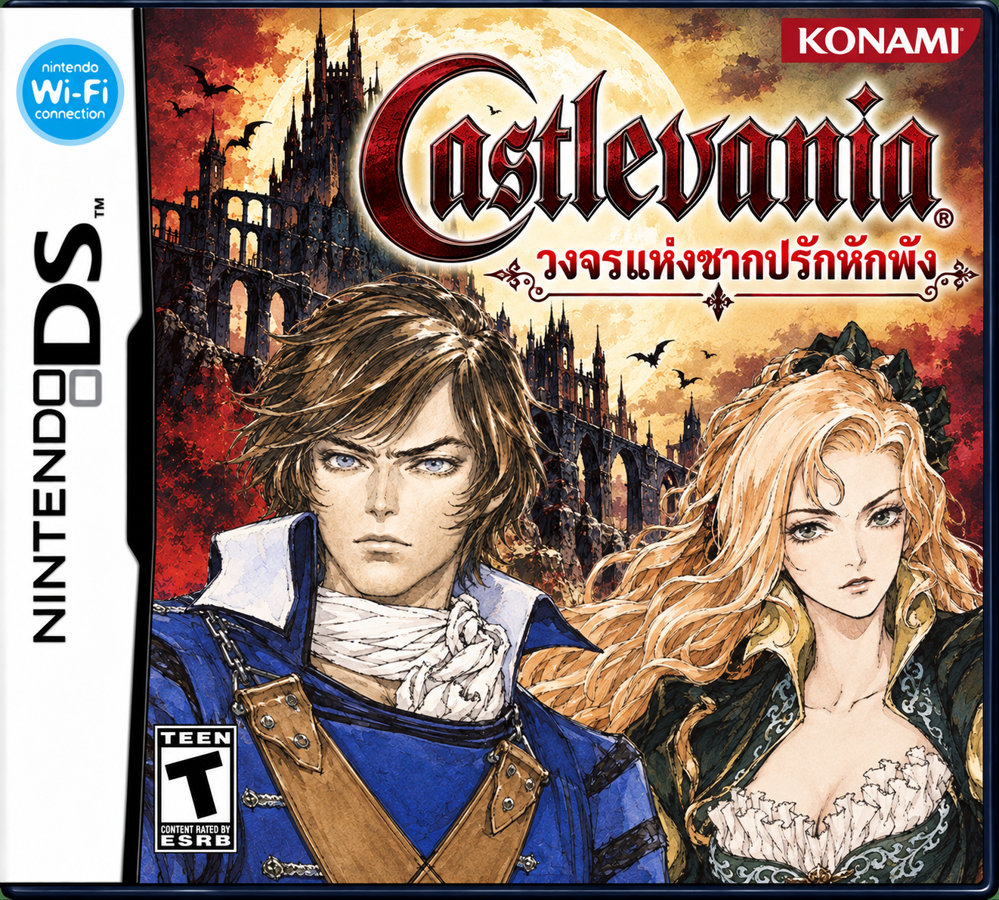

Castlevania: Rondo of Ruin
วงจรแห่งซากปรักหักพัง
Nintendo DS · ภาษาไทย · รุ่นทดสอบ 25 ต.ค. 2026
ภาพปกต้นฉบับที่ผู้แปลเลือก
เพิ่มแพตช์ BPS และฟอนต์ไทย พร้อมภาพปกที่ผู้แปลเลือก · รายงานตรวจข้อความ 2,504 กล่อง ไม่มี ERROR/WARN · ใช้ Rondo of Ruin v1.1.0 ฉบับ Rondo of Blood Richter (USA) ตาม SHA-256 เท่านั้น · ยังไม่ยืนยันการเล่นจนจบ
Castlevania - Rondo of Ruin (v1.1.0) (Rondo of Blood Richter) (USA).nds
ขนาด 134,217,728 ไบต์ (128 MiB) · รหัส ACBE
ต้องเป็นฉบับ Rondo of Ruin ที่ยังไม่ลงภาษาไทย ใช้ Portrait of Ruin ปกติหรือฉบับตัวละครอื่นแทนไม่ได้
รายงานจากชุดแปลระบุข้อความ 2,504 กล่องผ่านการตรวจไฟล์ การตรวจแพตช์และแฮชผลลัพธ์แยกจากการทดสอบเล่นเกม
ยังไม่มีหลักฐานยืนยันการเล่นจนจบ ต้องตรวจสระและวรรณยุกต์ในเมนูตัวเล็ก รวมถึงฉากศัตรูมาก บอส วาร์ป และเซฟ/โหลดตามข้อจำกัดในชุดแปล
- เลือกไฟล์ .nds ต้นฉบับตามรุ่นด้านบน
- กด “สร้าง ROM ภาษาไทย” และรอตรวจสอบ
- ดาวน์โหลดไฟล์ .nds ที่แปะแพตช์แล้ว
ประมวลผลในอุปกรณ์ของคุณ ไฟล์ ROM ไม่ถูกส่งขึ้นเว็บ
กำลังโหลดแพตช์…
กรุณาเปิดผ่านเว็บไซต์ HTTPS หรือเว็บเซิร์ฟเวอร์ในเครื่อง
ดาวน์โหลด ROM ภาษาไทยค่า SHA-256 สำหรับตรวจสอบ ROM
ต้นฉบับe149a4ada6ed67e2be883b6c5dbbcace743e54759244c1efafd8c41ee0fe02be
ไฟล์ภาษาไทยb4fafbe95df4009092b53cb36700bcb3de11c4049f6b9143b9d19dcfdc998874